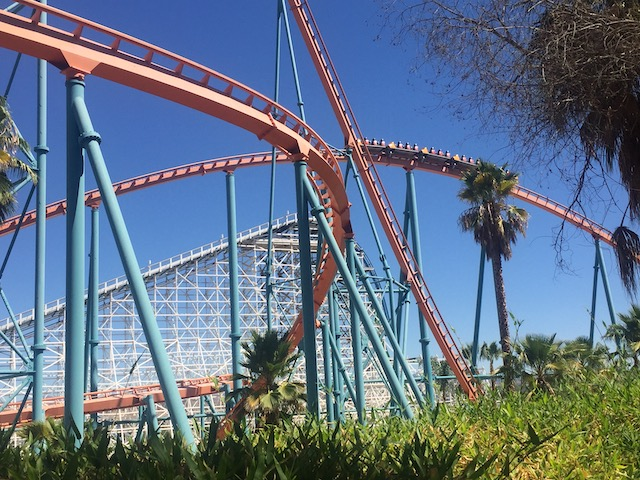

| |
Fall 2021 Photos
Fright Fest Halloween Horror Nights Knotts Scary Farm Belmont Park & Castle Dark
All right. Time for another Incrediblecoasters Halloween Update (sorry about the delay). And....this is a big one. I know last year, there was no Halloween season since...the world was basically ending. So to make up for it, we decided to have a kickass Halloween for 2021, doing damn near everything. So yeah. Let's start out with some fun at Six Flags Magic Mountain.
So Jason decided to go for the Diamond Elite Membership since....hey. Splurge and spoil himself. =)
Hmm. How do we make Fright Fest even scarier? Ooh! Make it start on 9/11! >=)
Fright Fest theming or neglectful maintenence from Six Flags Magic Mountain?
 Help! Get Tweety out of this cage before the real monster comes back. They say at night, the puddy cat comes back!
Help! Get Tweety out of this cage before the real monster comes back. They say at night, the puddy cat comes back!

OK. This is IncredibleCOASTERS. Time to get riding some roller coasters.
Are you f*cking serious!? BOO!!! F*CKING LAME!!! Worst thing about Six Flags Magic Mountain right now. Getting rid of the zippered pouches on Goliath. WHY!!? I genuinely don't know why. Hopefully this is just a temporary thing.
Hmm. How do we make Fright Fest even scarier? Ooh! Make it start on 9/11! >=)
Nooo! Not the Sewer of Souls! That was the whole reason for coming here!
Here's something for you to look at in case you get lost trying to find the mazes tonight.
 Can someone please make a Merry Go Round that always runs like how the ones in RCT run when they break down?
Can someone please make a Merry Go Round that always runs like how the ones in RCT run when they break down?
Hello Leftover VR lore on Revolution.
I see a way to get banned from Six Flags Magic Mountain here. >=)
BOO!!! TURN YOUR WATER FOUNTAINS BACK ON SFMM!!! >=(
I should be surprised that Roaring Rapids has that kind of line in September. But....with rising temperatures and climate change, I can't be surprised.
Eh. Technically not worh it, but I come here so often that....might as well.
 The racing is truly what makes this ride. It'd be meh as just half of the ride by itself. But the racing element just makes it so much more fun.
The racing is truly what makes this ride. It'd be meh as just half of the ride by itself. But the racing element just makes it so much more fun.
 Hey look! They've actually started construction on Wonder Woman!
Hey look! They've actually started construction on Wonder Woman!
 Wasn't the biggest fan of Jersey Devil (Spoiler Alert BTW). However, regardless, it's great to be getting another RMC at SFMM.
Wasn't the biggest fan of Jersey Devil (Spoiler Alert BTW). However, regardless, it's great to be getting another RMC at SFMM.
Speaking of RMCs at SFMM.
YES!!! THEY STILL HAVE THEM!!!
Thank you for still having your zippered pouches and not following in the footsteps of Goliath.
Still never gets a long line. And I like that.
 Am I seriously the only enthusiast who doesn't understand where the bitching about being rough is? It's not rough.
Am I seriously the only enthusiast who doesn't understand where the bitching about being rough is? It's not rough.
Ooh. It's starting to get dark. Time for our Six Flags Magic Mountain fun to end and for our Fright Fest fun to begin.
I see a lot of potential victims for these monsters.
Better get your rides on Batman the Ride in. Cause it's gonna be down for a while due to Wonder Woman construction.
All right. Time to start doing some Halloween mazes. =)
I know that Fright Fest mazes aren't exactly the best. But....this was definately the weakest one at Fright Fest.
I'm sorry. But....this update is so delayed that I forgot my thoughts on this maze between doing it and making the update (DAMN YOU YAHOO!!!). Hopefully this stays and I can redo it and then better capture my thoughts in a future Fright Fest update.
The scariest part of Fright Fest (if you're an idiot).
Thank you for taking care of the lines Fright Fest monsters.
These Arrow Suspendeds really are a ton of fun (Photo was taken during the day BTW).
Aww. Sad to see Willoughbys Mansion offically no longer at Fright Fest.
Yeah. Tonight may be about the mazes, but we've still got some fun coasters to ride.
And of course, we can't go this long without doing the best maze at Fright Fest.
Glad to see the spooky sunflower skulls are still here.
Well, thanks for another fun night Six Flags Magic Mountain. Fright Fest may not be the best Halloween event, but I had fun as always.
Halloween Horror Nights
Home
|